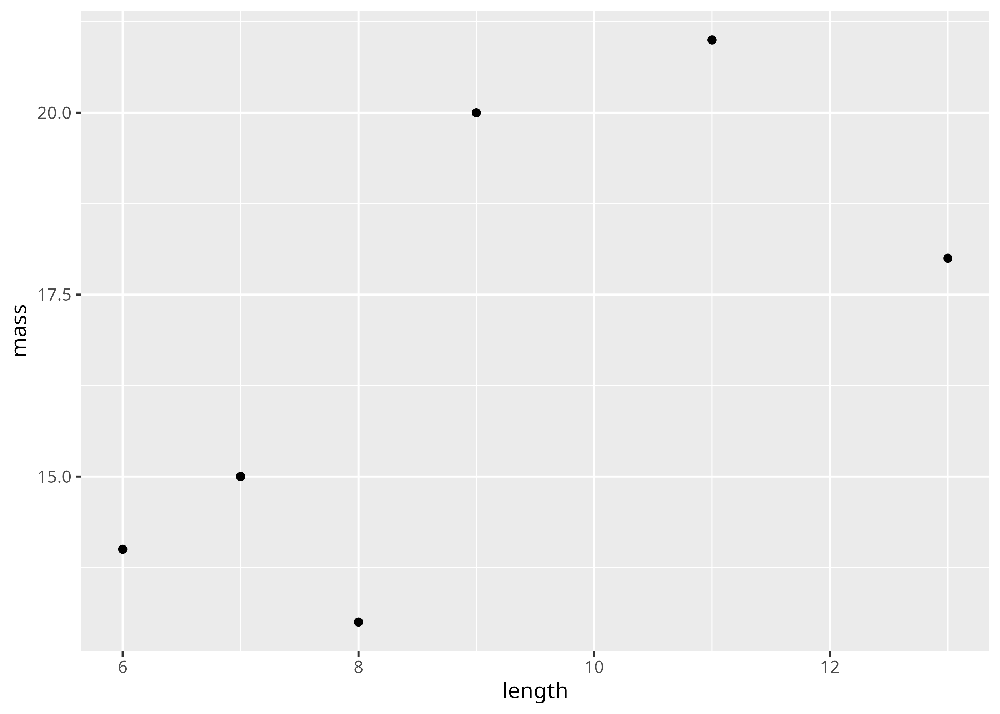
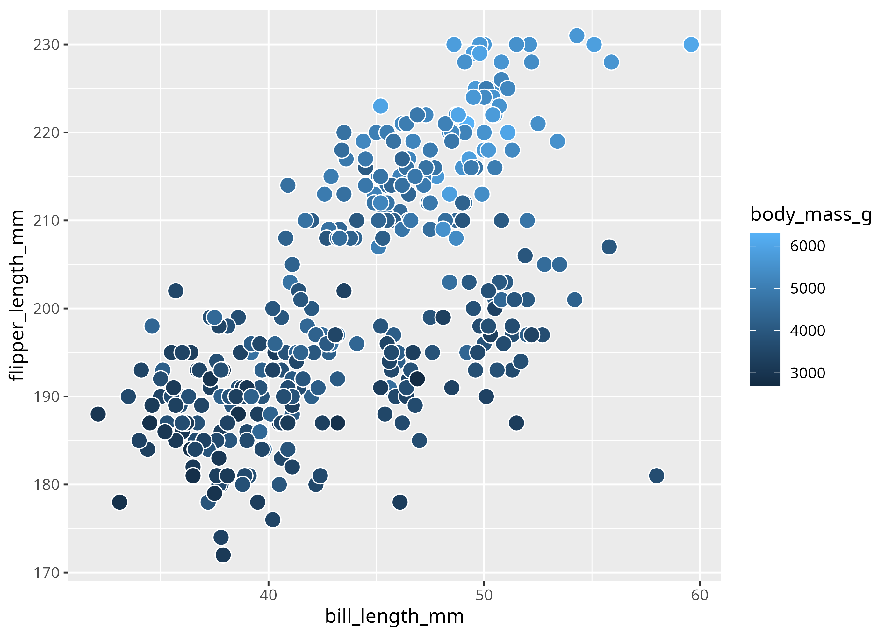
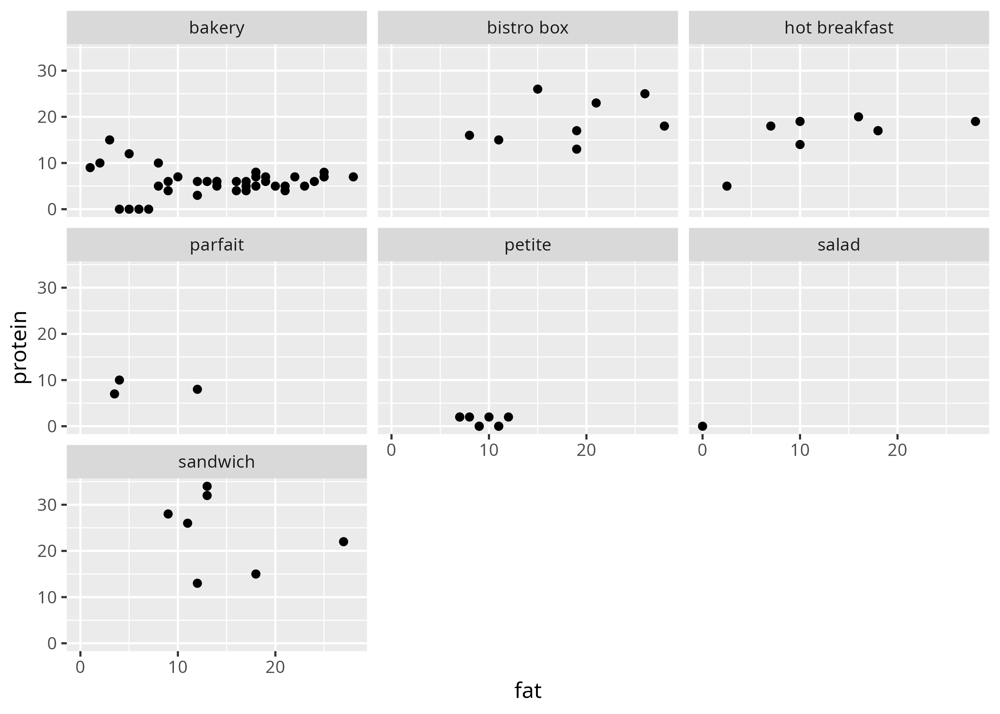
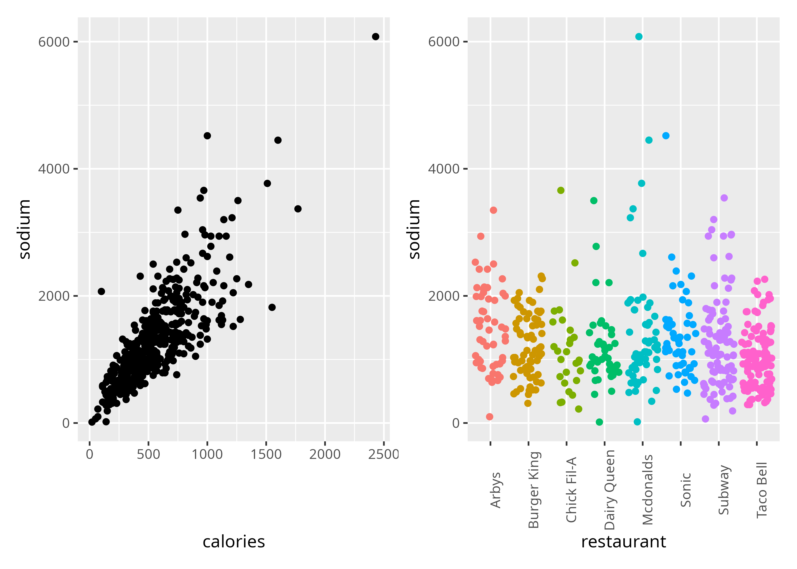
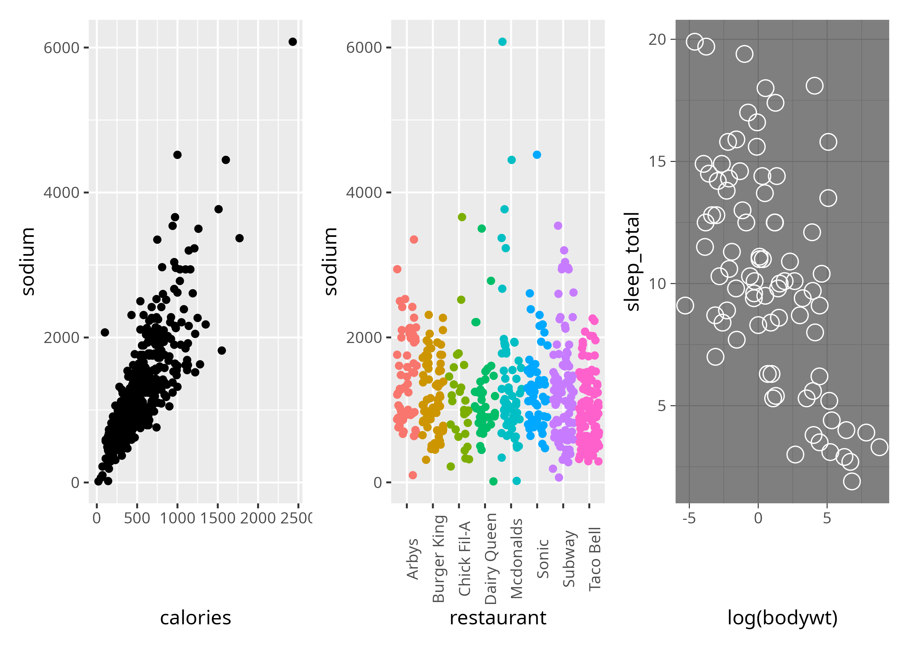
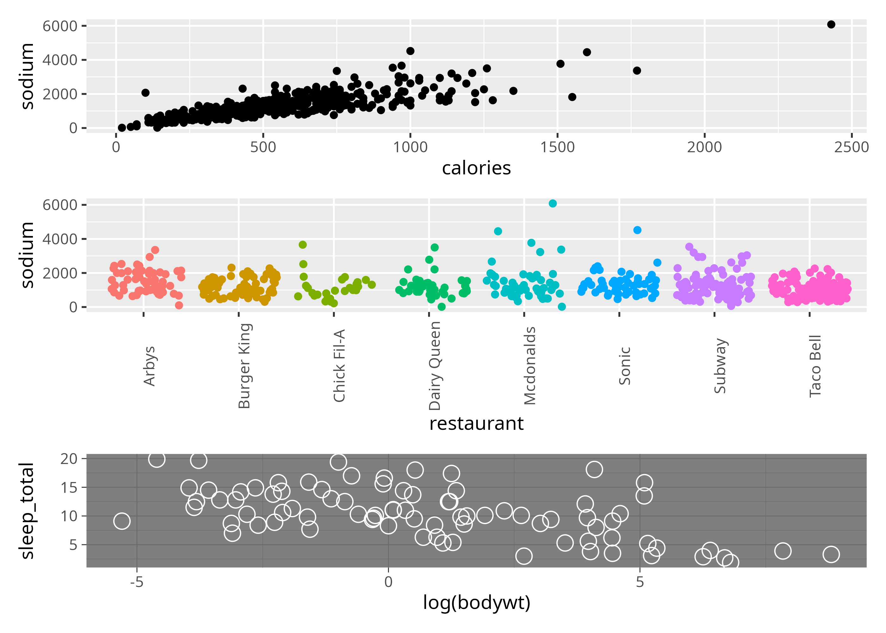
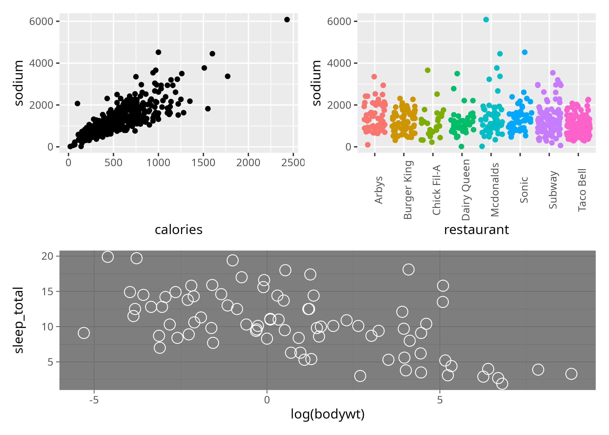
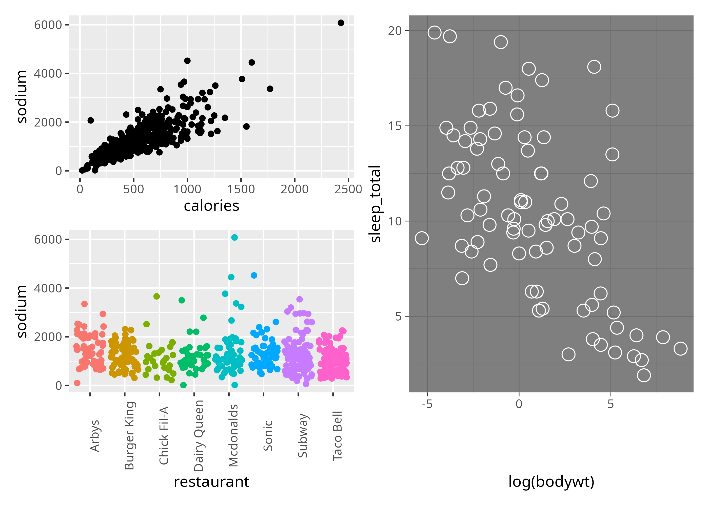
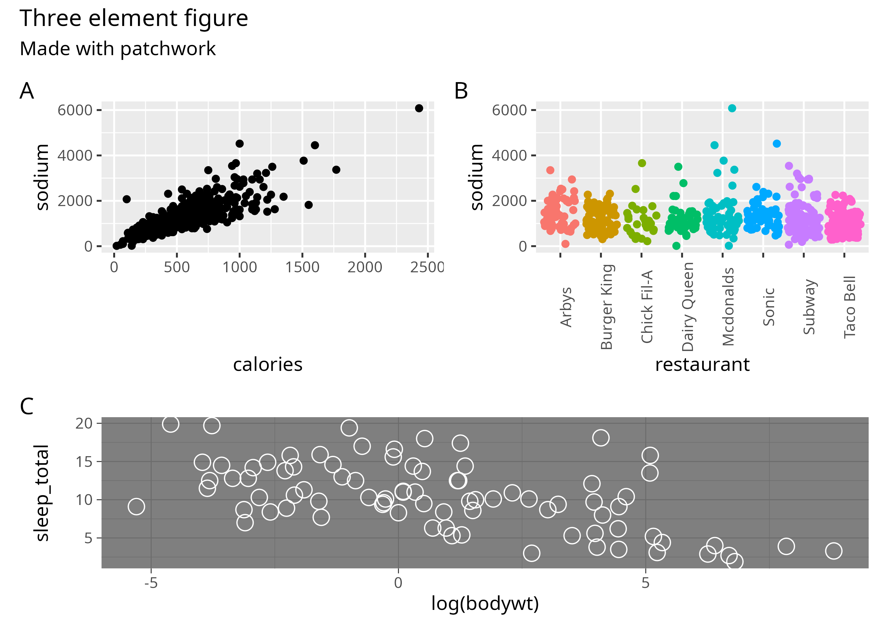

install.packages("ggplot2")
install.packages("ggthemes")
install.packages("ragg")
install.packages("patchwork")
install.packages("forcats")Data visualization
Today
- Graphics in R
- Introduction to
ggplot2
- Visual display of information
- Customization (axes, colors, fonts, legends, etc.)
- Exporting high-res figures
- Composition and complex graphs
Packages for today
Graphics in R
Since its first release, R has the ability to produce customizable publication-quality graphics.
- Base R plots
- Lattice plots (
latticepackage) ggplot2- wrapper packages and interactive elements (
highcharter,echarts4r,r2d3)
4. Graphics with base R An Introduction to R
Alex Douglas et al. (2023)
ggplot2
The Grammar of Graphics
Wilkinson (1999, 2005)
A Layered Grammar of Graphics
Hadley Wickham (2007)


Grammar: how words and their component parts combine to form sentences
With a grammar we don’t need to memorize every possible sentence to communicate in a language
If we learn a grammar for graphics, we can describe and build a wide range of graphics from scratch
Plot gallery
Compiled by Cédric Scherer
Layered graphics

Building a ggplot
data - object with the data we wish to visualize
aes (mapping) - definition of how variables in the dataset are mapped to visual properties (aesthetics) of the plot
geom - geometrical object that represents data
ggplot(data, aes(x,y)) +
geom_point()
ggplot() creates the plot
aes() links variables in the data with visual properties of the plot
geom_* defines a layer with a visual representation of the data
| length | mass | stage |
|---|---|---|
| 9 | 20 | adult |
| 8 | 13 | juvenile |
| 7 | 15 | juvenile |
| 13 | 18 | adult |
| 11 | 21 | adult |
| 6 | 14 | juvenile |
lizards <-
tibble::tribble(
~length, ~mass, ~stage,
9L, 20L, "adult",
8L, 13L, "juvenile",
7L, 15L, "juvenile",
13L, 18L, "adult",
11L, 21L, "adult",
6L, 14L, "juvenile"
)| length | mass | stage |
|---|---|---|
| 9 | 20 | adult |
| 8 | 13 | juvenile |
| 7 | 15 | juvenile |
| 13 | 18 | adult |
| 11 | 21 | adult |
| 6 | 14 | juvenile |
| x | y | shape |
|---|---|---|
| 9 | 20 | circle |
| 8 | 13 | triangle |
| 7 | 15 | triangle |
| 13 | 18 | circle |
| 11 | 21 | circle |
| 6 | 14 | triangle |
ggplot(data = lizards,
aes(x = length,y = mass))+
geom_point()
Hands-on
- Open the file
01_first-plots.R - Follow along
Customization
We can modify everything that we see in a plot
labs
fill
color
size
themes
scale_fill_*
scale_shape_*
scale_color_*
labels for axes, titles, etc.
fill colors
border colors
object sizes
preset looks
manual control over mappings (color, fill, shape)
ggplot2 has built-in defaults for shapes and colors


Non-default colors and shapes
Manual control with vectors (fills, colors, shapes) for the values argument of scale_*_* functions
ggplot(penguins,
aes(x=bill_length_mm,
y=flipper_length_mm,
shape=species,color=species))+
geom_point()+
scale_color_manual(values=
c('pink','blue',"red"))+
scale_shape_manual(values=
c(20,21,22))Colors
HTML names


Colors
Hex codes

Free Color Picker (Windows); Gpick (Linux); ColorSlurp (Mac)
Color palettes
- Specify a named palette
- Define with a vector

🔗 Example gallery for paletteer
Legend titles
The name arguments modifies the title for legends created automatically for each mapping
aes(x,y, color = var1, shape = var2)+
scale_color_manual(values=c('red','blue'),
name= 'Variable One')+
scale_shape_manual(values=c(20,21),
name = 'Variable Two')Quantitative variables + color:
- Default color ramp or named gradient
- Define gradient with
scale_x_gradient
ggplot(penguins,
aes(x=bill_length_mm,
y=flipper_length_mm,
fill=body_mass_g))+
geom_point(size=4,
color="white",
pch=21)Warning: Removed 2 rows containing missing values or values outside the scale range
(`geom_point()`).
Hands-on: Customization
Modifying graphical parameters
02_customizing.R
Themes
Control multiple visual parameters without altering the underlying data
- 8 themes available with
ggplot2
- packages with additional themes:
ggthemes,artyfarty,hrbrthemes`
- create our own

Color ramps
- More accurate visual perception of central value and increments of the underlying variables

🔗 Fabio Crameri - Scientific Color Maps
Perceptually uniform color ramps


viridis
- installed with
ggplot2 - call with
scale_x_viridis()
scico
- provided by
scicopackage - divergent & sequential
Hands-on: Color ramps
Colors and continuous variables
03_ramps.R
Exporting graphics
Our options
- ‘Export’ button in RStudio
- Graphical devices
ggsave()(ensure ragg is installed for nicer images)- Formats: png, jpg, pdf, etc.
Exporting
Note
We can assign plots as workspace objects
my_plot <-
ggplot(penguins,
aes(x=bill_length_mm,
y=flipper_length_mm))+
geom_point(size=2,pch=21)
ggsave(my_plot,
filename = "myplotgs.png",
width = 10,
height = 10,
units ="cm",
dpi = 200)Facetting

Facet functions
facet_wrap() splits by one variable and wraps the resulting subplots
facet_grid() splits by combinations of variables

Hands-on: Facets
starbucks coffee shop data from openintro
04_facets.R
Factors and plots
Values for categorical variables will be ordered alphabetically unless specified otherwise
ggplot(starbucks,aes(fat,protein))+
geom_point()+facet_wrap("type")
Factor levels
We can specify the order of factor levels manually using the levels argument
For more flexible manipulation of categorical factor data: forcats

- reorder according to values in another variable
- supress alphabetical order
- reverse level order
- much more
Hands-on: Reordering factor levels
babies_crawl crawling age data from openintro
05_reorder.R
Note
Crawling age (weeks) in relation to temperature and birth month. From Benson (1993).
Composing plots with patchwork

+to combine plots|side by side/above/below
Simple algebra for arranging and nesting elements
plot_layout()controls compositionplot_annotation()tag elements or add labels to composite plot
library(openintro)Loading required package: airportsLoading required package: cherryblossomLoading required package: usdata
Attaching package: 'openintro'The following object is masked from 'package:gt':
sp500data("fastfood")
ggplot(fastfood,aes(calories,sodium))+
geom_point()+
ggplot(fastfood,aes(restaurant,sodium))+
geom_jitter(aes(color=restaurant))+
theme(axis.text.x = element_text(angle = 90),
legend.position = "none")
Easier to read:
cal_sodium_plt <- ggplot(fastfood,aes(calories,sodium))+
geom_point()
rest_sodium_plt <- ggplot(fastfood,aes(restaurant,sodium))+
geom_jitter(aes(color=restaurant))+
theme(axis.text.x = element_text(angle = 90),
legend.position = "none")
cal_sodium_plt+rest_sodium_pltThree plots:
cal_sodium_plt+rest_sodium_plt+
ggplot(msleep,
aes(x=log(bodywt),y=sleep_total))+
geom_point(size=4,color="white",pch=21)+
theme_dark()
Single column
sleepy <-
ggplot(msleep,
aes(x=log(bodywt),y=sleep_total))+
geom_point(size=4,color="white",pch=21)+
theme_dark()cal_sodium_plt+rest_sodium_plt+sleepy+
plot_layout(ncol=1)
Nesting:
(cal_sodium_plt+rest_sodium_plt)/sleepy
Nested but note the |
(cal_sodium_plt/rest_sodium_plt)|sleepy
Annotations
(cal_sodium_plt+rest_sodium_plt)/sleepy+
plot_annotation(title="Three element figure",
subtitle = "Made with patchwork",
tag_levels = "A")
tag_levels generates alphabetical or numeric sequences to identify plot elements